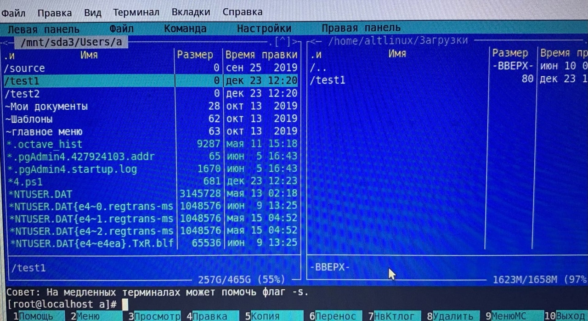

Загрузочная флешка
- Для установки операционки на флешку использовался Rufus, дистрибутив, который выбирается для установки-alt linux:
- Выключаем пк, вставляем флешку, зажимаем f12 при включении, выбираем нужное устройство, загружаемся в линукс
- Далее на линуксе заходим в терминал вводим su fdisk -l. Наша основная ос находится в /dev/sda3
- Создаем точку монтирования (mkdir /mnt/sda3) и далее монтируем диск с системой в этот каталог
- Левая панель- откуда будем копировать файл(каталог, смонтированный в предыдущем пункте), правая-куда копируется:
- Для того чтобы скопировать файл используется клавиша f5- далее enter- файл скопирован:
